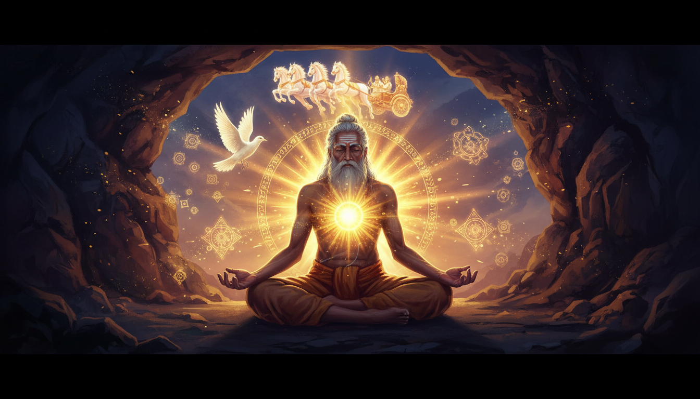

ज्योतिषी के पास एक ऐसा जातक आता है जिसकी शिकायत का उपचार-शब्दावली में कोई नाम नहीं है।

कुछ भी टूटा नहीं है। विवाह है। आय है। स्वास्थ्य सामान्य है। और फिर भी उस व्यक्ति ने तीस वर्ष अवहेलित होने में बिता दिए हैं — वह प्रमोशन जो कम योग्य सहकर्मी को मिला, वह पुस्तक जो ग्यारह प्रकाशकों ने लौटा दी और फिर किसी और के नाम से बेस्टसेलर बनी, वह परिवार जिसमें उसकी बात सुनी जाती है और फिर चुपचाप नहीं मानी जाती, वह कमरा जिसमें वह बोलता है और बातचीत ऐसे फिर शुरू हो जाती है जैसे कोई दरवाज़ा बंद हो गया हो।
उसने माणिक्य धारण किया है। नौ वर्ष तक हर रविवार सूर्य-अर्घ्य दिया है। गेहूँ, गुड़ और ताम्र दान किया है, आदित्य हृदयम् ग्यारह हज़ार बार पढ़ा है — और वह विनम्रता से, क्योंकि वह उस तरह का व्यक्ति ही है, आपको बताएगा कि दिखाई न देने की मूल बात में कुछ नहीं बदला।
यह साधारण अर्थ में निर्बल सूर्य नहीं है। निर्बल सूर्य आत्मविश्वास की कमी देता है, कठिन पिता देता है, अधिकार की हीनता देता है। यह उससे अधिक विशिष्ट कुछ है: ऐसी कुंडली जिसमें आत्म-कारक उपस्थित है पर दृश्य नहीं — जहाँ जातक का सार अक्षुण्ण है और उसकी मान्यता नहीं। परंपरा के पास उस अंतराल का ठीक नाम है जो व्यक्ति जो है और संसार जो स्वीकार करने को तैयार है, इनके बीच पड़ता है — और उस अंतराल को भरने वाला एक ऋषि है, जिसने इसे मनुष्य के लिए उपलब्ध सबसे चरम ढंग से भरा।
उसने इसे गर्भ में भरा।
उसका नाम वामदेव (वामदेव) है — "जिसका देवता वाम है", सुंदर, बाएँ वाला।
और जिस विद्या के लिए वह स्मरण किया जाता है, वह सूर्य की स्तुति नहीं है। वह सूर्य के साथ तादात्म्य है — ऐसी साधना जिसमें जातक सूर्य से कुछ माँगता नहीं, क्योंकि आकाश में सूर्य ही एकमात्र ग्रह है जिसे उपहार दिया ही नहीं जा सकता।
भाग एक: स्रोत जिस ऋषि का वर्णन करते हैं
1. चौथे मंडल का कवि, और एक राजा का पुरोहित
वामदेव कोई पौराणिक आकर्षण नहीं हैं जिनकी जीवनी बाद में गढ़ी गई हो। वे ऋग्वेद के दस कुल-मंडलों के ऋषियों में से एक हैं: पूरा चौथा मंडल — एक सौ अठावन सूक्त — उनके और उनके वंश के नाम पर है।
स्रोत उन्हें सादा, लगभग अफ़सरशाही पहचान देते हैं:
वामदेव हिंदू साहित्य के ऋषि हैं। ऋग्वेद के चौथे मंडल के रचयिता उन्हीं को माना जाता है […] उन्हें गौतम नामक ऋषि के पुत्र और नोधा के भाई बताया गया है, जो ऋग्वेद के सूक्तों से जुड़े हैं। वामदेव बृहदुक्थ के पिता हैं और अंगिरा ऋषि के वंश से हैं।
अर्थात्: गौतम के पुत्र, नोधा के भाई, बृहदुक्थ के पिता, अंगिरस वंश के। अंगिरस वंश यहाँ जितना दिखता है उससे अधिक महत्व रखता है। यह अग्नि का कुल है — अंगार का, जलते कोयले का। वामदेव उस एक वैदिक कुल के हैं जिसकी पूरी विरासत ताप का प्रबंधन है, और विशेष रूप से उस ताप का जो जलाया नहीं जाता, ढोया जाता है।
रामायण में वे बाल-कांड के अंतर्गत दशरथ के पुरोहितों में हैं — उस राजा के यज्ञ-मंडल में, जिसकी पूरी समस्या यह थी कि संतान नहीं होती, और जिसका उपचार वह अग्नि-कर्म था जिसने खीर के पात्र से चार पुत्र उत्पन्न किए। यह ब्यौरा याद रखिए। वामदेव उस कमरे में खड़े थे जहाँ परंपरा का सबसे प्रसिद्ध संतान-कर्म हुआ — और उनकी अपनी कथा उलटी स्थिति से शुरू होती है: ऐसा पुरुष नहीं जो संतान न कर सके, बल्कि ऐसी संतान जो पहले से पूर्ण आती है।
2. वह वाक्य जो उसने माँ के भीतर से कहा
यही वह अंश है जो वामदेव को सब ऋषियों में अद्वितीय बनाता है, और यह तीन अलग-अलग स्थानों पर सुरक्षित है — ऐतरेय उपनिषद्, बृहदारण्यक उपनिषद्, और स्वयं ऋग्वेद।
ऐतरेय अपने दूसरे अध्याय में उस आत्मज्ञान का वर्णन करता है जो आत्मा को जानने वाले का होता है, और फिर अपना उदाहरण नाम लेकर देता है। वामदेव ने, वह कहता है, यह गर्भ में रहते हुए ही जान लिया था — और उसने माँ के भीतर से वे शब्द कहे जो बाद में वैदिक ऋचा बने। बृहदारण्यक उसी घोषणा को उद्धृत करता है उसी बात को सिद्ध करने के लिए: जब मनुष्य आत्मा को जान लेता है, तब वह केवल यह नहीं सोचता कि वह ब्रह्म है, वह उस समग्रता को बन जाता है जो सब कुछ है।
और ऋचा स्वयं ऋग्वेद 4.26.1 है — उनका अपना सूक्त — और यह पूरे संग्रह की सबसे साहसी पंक्तियों में से एक है:
अहम् मनुर् अभवम् सूर्यश् चाहम्
"मैं मनु था। मैं सूर्य बन गया।"
काल को ध्यान से पढ़िए, क्योंकि पूरी साधना उसी पर टिकी है, और लगभग हर लोकप्रिय पुनर्कथन इसे गलत करता है।
वह यह नहीं कहता मैं सूर्य हूँ। वह यह नहीं कहता मैं सूर्य की पूजा करता हूँ। वह कहता है मैं बन गया — अभवम्, लुङ् लकार, समाप्त घटना का काल, ऐसी बात जो हो चुकी है और जिसे पलटा नहीं जा सकता। यह तादात्म्य वर्तमान काल में पद का दावा नहीं है। यह उस अवस्था-परिवर्तन का प्रतिवेदन है जो पहले ही घट चुका है।
और वाक्य का एक तीसरा खंड है, जिसे लोकप्रिय परंपरा प्रायः छोड़ देती है और जो क्रियात्मक रूप से सबसे महत्वपूर्ण अंश है:
…अहम् ककुथ्-सलः — "…मैं ककुत्सल हूँ।"
ककुत्सल इंद्र का विशेषण है, और इसका अर्थ ठीक-ठीक है "जिसकी भुजा ही उसका बल है" — ककुथ् से, कंधे का जोड़, वह स्थान जहाँ भुजा शरीर से मिलती है। इस प्रकार पूरी ऋचा एक निश्चित क्रम में त्रिविध तादात्म्य है:
- मनु — पूर्वज-मन, प्रथम पुरुष, उत्तराधिकार में मिला ढाँचा। मनस्। वक्ष।
- सूर्य — प्रकाश, नेत्र, वह जो दिखता है और दिखने की क्षमता दोनों। चक्षुस्। नेत्र।
- ककुत्सल / इंद्र — भुजा, कंधा, देखे हुए पर कर्म करने की क्षमता। बल। दाहिनी भुजा।
मन, नेत्र, भुजा। ढाँचा, मान्यता, निष्पादन। जो व्यक्ति अदृश्य है वह साधारणतः तीनों में निर्बल नहीं होता; वह प्रायः पहले और तीसरे में बलवान् होता है और दूसरे में अवरुद्ध — उसे पता है कि वह कौन है, वह कर्म कर सकता है, और बीच का पद, अर्थात् दिखाई देना, नहीं चलता। इसी कारण आदित्य हृदयम् इस स्थिति को नहीं सुधारता: वह सूर्य को द्वितीय पुरुष में, स्तुति के विषय के रूप में संबोधित करता है, और बीच का पद कभी स्थापित ही नहीं करता।
कार्य-स्वरूप: किसी भी कर्म से पहले, एक पर्ची पर तीन खंड अपनी लिखावट में, इसी क्रम में लिखिए — जो ढाँचा आपको उत्तराधिकार में मिला, जो मान्यता आपको नहीं मिली, और जो कर्म आप उस मान्यता के होने पर करते। वामदेव का क्रम सजावट नहीं है। परंपरा कहती है कि आप पहले खंड के बारे में झूठ बोलते हुए दूसरे खंड का दावा नहीं कर सकते, और बुद्धिमान्, समर्थ जातक में सूर्य-साधना के विफल होने का सबसे सामान्य कारण यही है कि वह उत्तराधिकार को नाम दिए बिना मान्यता खरीदने का प्रयास कर रहा है।
3. दूसरा सूक्त: वह श्येन जो ऊपर गया और लौट आया
एक और वामदेव-सूक्त है जिसकी आवश्यकता साधना में पड़ती है, और जिसे कोई नहीं सिखाता।
ऋग्वेद 4.27 श्येन — बाज़, श्येन-पक्षी — के मुख से कहा गया है: वह पक्षी जो सर्वोच्च स्वर्ग से झपट्टा मारता है और सोम उठा लाता है, जबकि धनुर्धर उस पर बाण चलाते हैं। सूक्त का प्रथम पुरुष वही पक्षी है:
"मैं श्येन था… मैं सोम सर्वोच्च आकाश से लाया।"
यह सिद्धांत का पुनःप्राप्ति वाला आधा भाग है, और उसका तर्क 4.26 का ठीक पूरक है।
4.26 में गति तादात्म्य की है — मैं पहले से ही यह हूँ। 4.27 में गति अर्जन की है — जो मेरा है वह कहीं और रखा है, ऊँचाई पर, सुरक्षित, और उसे नीचे लाना है। इस पाठ में सोम पेय नहीं है। उपचार की भाषा में वह वह वस्तु है जो आपसे छीन ली गई और इस समय कोई और रखे हुए है: आपका नाम, आपका श्रेय, आपका हिस्सा, आपके पिता की स्वीकृति, आपके ही काम का श्रेय-लेखन।
श्येन-कथा का निर्णायक ब्यौरा देखिए: पक्षी धनुर्धरों को पराजित नहीं करता। उसे बाण लगता है — एक पंख उड़ जाता है — और वह फिर भी पहुँचता है। परंपरा इसे इसलिए सुरक्षित रखती है कि यह मान्यता की ईमानदार संरचना है। आपको अपना नाम अक्षुण्ण और अछूता वापस नहीं मिलता। आपको वह घायल और अपने अधिकार में वापस मिलता है। जो जातक बिना घायल हुए मान्यता पाने की प्रतीक्षा कर रहा है, वह ऐसी कथा की प्रतीक्षा कर रहा है जो नहीं है, और यही इस स्थिति के तीस वर्ष तक चलने का बहुत बड़ा कारण है।
कार्य-स्वरूप: अपने मामले में दोनों क्रियाओं को अलग पहचानिए और मिलाइए नहीं। तादात्म्य का कर्म आँख बंद करके, सूर्योदय पर, अकेले किया जाता है — यह भीतर का दावा है। पुनःप्राप्ति का कर्म आँख खोलकर, उसी घड़ी जब आपकी विशेष हानि हुई थी, किया जाता है, और यह संसार में किया गया दावा है — भेजा गया पत्र, माँगा गया श्रेय, अपनी बनाई वस्तु पर फिर से लगाया गया अपना नाम। परंपरा दूसरे को केवल ध्यान में करने की अनुमति नहीं देती। श्येन उड़ा था।
4. कुत्ते की अँतड़ियाँ, और यह ऋषि उन लोगों के लिए क्यों हैं जो स्वयं को अपात्र मानते हैं
अब वह भाग जिसे सभ्य परंपरा चाहती है कि आप न जानें, और जो इस साधना को उन लोगों के लिए उपयोगी बनाता है जिन्हें वास्तव में इसकी आवश्यकता है।
धर्म-ग्रंथ दर्ज करते हैं — और वामदेव स्वयं ऋग्वेद में इसका स्वीकार करते हैं — कि दुर्भिक्ष के समय उन्होंने कुत्ते का मांस खाया। मनुस्मृति और बौधायन परंपरा दोनों इस घटना को भूख से अंतिम अपवित्रता तक धकेले गए ब्राह्मण के मानक उदाहरण के रूप में सुरक्षित रखती हैं, और दोनों उन्हें कलंक नहीं, बल्कि प्रायश्चित्त का पूर्ववृत्त मानती हैं। ऋग्वेद के मौखिक-साहित्य शोध में भी उनके ही सूक्तों में यह आत्म-स्वीकारांकित है।
यह कितना विचित्र है, इस पर ठहरिए।
जो ऋषि घोषित करता है "मैं सूर्य बन गया", वही ऋषि लिखित रूप में, उसी संग्रह में स्वीकार करता है कि उसने वह खाया जो कुत्ता खाता है। परंपरा ने इसे दबाया नहीं। उसने इसे रखा, और इसे एक ही पुरुष में रखा, और यह जानबूझकर किया, क्योंकि दोनों तथ्य एक ही तथ्य हैं।
सैद्धांतिक बात यह है, और यही कारण है कि यह साधना वहाँ काम करती है जहाँ शुद्धता-आधारित सूर्य-उपचार विफल होते हैं। सूर्य शुद्धता, प्रतिष्ठा, और सार्वजनिक रूप से देखे जाने के अधिकार का ग्रह है। इसलिए हर परंपरागत सूर्य-उपचार में एक छिपी पूर्व-शर्त है: पहले शुद्ध हो जाओ। श्वेत धारण करो। स्नान करो। यह छोड़ दो। अच्छे कुल के हो। वह मत खाओ। और जो जातक पहले से ही मूलतः अपात्र अनुभव करता है — जन्म से, तलाक से, आपराधिक मुकदमे से, गरीबी से, ऐसे शरीर से जो पार नहीं उतरता, उस अपयश से जिसे सब जानते हैं — वह वर्षों तक वे उपचार करता रहेगा जिनके ठीक बीच में एक ताला लगा दरवाज़ा है। वह सूर्य से अपनी मान्यता माँग रहा है और भीतर-ही-भीतर सूर्य के अपने विरुद्ध फैसले से सहमत है।
वामदेव की साधना में अपवित्रता कर्म के भीतर, एक सामग्री के रूप में है। नीचे दी गई कार्य-विधि में एक अंग कुत्ते को भोजन का हिस्सा देना है — भोजन को फेंकना नहीं, जैसे किसी हीन को अर्पण, बल्कि खिलाना, और जातक के खाने से पहले। जिस ऋषि ने कुत्ते का भोजन खाया, वही यह पूर्ववृत्त स्थापित करता है कि कुत्ते का हिस्सा मनुष्य के हिस्से से पहले आ सकता है और सूर्य पीछे नहीं हटता। वही एक अंग है जो उस जातक में बीच के पद — दिखाई देने — को चलने योग्य बनाता है जो कोई अपात्रता ढो रहा है।
कार्य-स्वरूप: किसी अस्वीकृत अपात्रता को पकड़े हुए दर्पण-साधना न करें। उसे एक बार, एक वाक्य में, ऊँची आवाज़ में, सूर्योदय से, सबसे सीधे शब्दों में कह दें। कानूनी संस्करण नहीं। सीधा वाला। परंपरा का स्वयं का पूर्ववृत्त वह पुरुष है जिसने अपने विषय में सबसे बुरी बात उस सूक्त में कही जो आज तीन हज़ार वर्ष बाद भी गाया जाता है, और उससे वह छोटा नहीं हुआ।
5. शाप, जिसमें मुक्ति की शर्त भी थी
एक और प्रसंग, गणेश पुराण से, और यह उनकी जीवनी की सबसे व्यावहारिक रूप से उपयोगी वस्तु है।
उड़ते हुए एक गंधर्व ने भूल से ऋषि को कुचल दिया। वामदेव ने उसे शाप दिया — और शाप ने उसे चूहा बना दिया। फिर, जब गंधर्व ने विनती की, तब ऋषि ने शाप को केवल वापस नहीं लिया। उन्होंने उसे संशोधित किया: चूहे के रूप में गंधर्व गणेश का वाहन बनेगा — विघ्नहर्ता का वाहन।
संरचना देखिए। उन्होंने बंधन रद्द नहीं किया। उन्होंने बंधन के भीतर मुक्ति गढ़ दी, और वह मुक्ति एक उन्नयन थी।
यह पूरे लेख की सबसे महत्वपूर्ण तांत्रिक सफाई है, और वही चीज़ है जो उपचार-कर्म को धीमे काम करने वाले शाप से अलग करती है। जब कोई जातक उस व्यक्ति या संस्था का नाम लेता है जिसने उसे मान्यता नहीं दी, और यह सूर्योदय पर, मंत्र के साथ, औपचारिक ढाँचे में करता है — वह शाप है, चाहे उसका इरादा हो या न हो, चाहे वह शापों पर विश्वास करे या न करे। वैदिक परंपरा पूरी तरह स्पष्ट है कि कर्म-ढाँचे में सुगठित संकल्प वाष्पित नहीं होता। वह स्थापित होता है।
और वह उस पर भी स्थापित होता है जिसने कहा, उतना ही जितना उस पर जिसका नाम लिया — क्योंकि बिना मुक्ति-शर्त वाला शाप शाप देने वाले को शापित से बाँधे रखता है। यही उस जातक का अनुभव-शास्त्र है जो उस व्यक्ति के बारे में सोचना बंद नहीं कर पाता जिसने उसके साथ अन्याय किया। वह ग्रस्त नहीं है। वह अपने ही अनर्पित सूत्र से बँधा है।
वामदेव का समाधान आदर्श है: किसी भी निषेध को उसके अंतकारी के बिना कभी न कहें।
कार्य-स्वरूप: सूत्र एक वाक्य है जिसके दो आधे हैं, जिनके बीच विराम नहीं। "जब तक [विशिष्ट, दृश्य शर्त], यह टिका रहेगा; जब वह हो जाए, यह मुक्त है, वह मुझसे मुक्त और मैं उससे।" यदि आप कोई दृश्य अंत-शर्त नाम नहीं दे सकते, तो आप पहला आधा कहने के लिए तैयार नहीं हैं। यह नैतिक निर्देश नहीं है। यह तकनीकी है: बिना अंतकारी वाला खंड स्थायी स्थापना है, और स्थायी स्थापनाएँ वही हैं जिन्हें हटवाने लोग ज्योतिषी के पास आते हैं।
6. ईमानदार समस्या: ग्रंथ सिद्धांत देते हैं, विधि नहीं
अब वह खुलासा जो इस श्रृंखला का हर लेख करता है और लोकप्रिय लेख कभी नहीं करते।
ऋग्वेद वामदेव की घोषणा देता है। ऐतरेय और बृहदारण्यक यह तथ्य देते हैं कि उन्होंने इसे गर्भ में जाना। कोई भी विधि नहीं देता। कोई वामदेव-सूत्र नहीं है जो कहे: ताम्र लो, जल लो, पूर्व की ओर मुख करो, यह बारह बार करो।
परंपरा जो देती है वह यह है: (क) ऋचा अपनी ठीक त्रिविध संरचना के साथ, (ख) जीवनी के पूर्ववृत्त — दुर्भिक्ष, कुत्ता, मुक्ति-शर्त वाला शाप, वह श्येन जिसे बाण लगा और जो फिर भी पहुँचा, (ग) पुरोहितीय संदर्भ — वे राजा के संतान-कर्म के पुरोहित-मंडल के थे, और (घ) अंगिरसों की कुल-तकनीक, अर्थात् ढोए गए ताप का प्रबंधन।
भाग तीन की साधना इन्हीं चार वस्तुओं से जोड़ी गई है। यह एक पुनर्निर्माण है, और ऐसा ही प्रस्तुत किया गया है — जैसे रैकव की साधना संवर्ग-विद्या से जोड़ी गई थी, और जैसे इस परंपरा की हर कार्य-विधि सदा जोड़ी गई है। जो पुनर्निर्माण नहीं है वह है: ऋचा, उसके तीन खंडों का क्रम, कुत्ते के हिस्से का पूर्ववृत्त, और मुक्ति-शर्त का सिद्धांत। वे स्रोतों में हैं।
भाग दो: अदृश्य कुंडली के लिए "आत्म-अर्पण" सही क्रिया क्यों है
चार स्थितियाँ जिन्हें लोग निर्बल सूर्य समझ लेते हैं
बाज़ार का लगभग हर "निर्बल सूर्य" पाठ चार अलग-अलग कुंडलियों को एक निदान में मिला देता है, और फिर चारों पर एक ही उपचार लगाता है — इसीलिए वह उपचार प्रायः कुछ नहीं करता।
स्थिति एक: जीवन-ताप की कमी। ठंडे हाथ, कम सहनशक्ति, कमज़ोर पाचन, टकराव की भूख नहीं। यहाँ सूर्य में वास्तव में तेज की कमी है। यह परंपरागत उपचारों से सुधरती है — माणिक्य, गेहूँ, गुड़, सूर्य-नमस्कार, आदित्य हृदयम्। यदि आपकी कुंडली यह है, तो वामदेव की साधना आपकी पहली आवश्यकता नहीं है। पहले ताप। दर्पण-साधना यह मानकर चलती है कि प्रतिबिंबित करने के लिए कुछ है।
स्थिति दो: अवरुद्ध पितृ-रेखा। सूर्य-शनि युति, छठे या आठवें में सूर्य, द्वादश में सूर्य, सूर्य के साथ राहु — और ऐसा पारिवारिक इतिहास जिसमें पिता अनुपस्थित थे, अपमानित थे, या स्वयं अदृश्य थे। यहाँ जातक का सार्वजनिक रूप से खड़े होने का अधिकार कभी संप्रेषित ही नहीं हुआ, क्योंकि संप्रेषक अवरुद्ध था। "अवहेलित" शिकायत का यह सबसे सामान्य मूल है और यहीं कुत्ते के हिस्से वाला अंग अपना काम करता है।
स्थिति तीन: किसी पहचाने जा सकने वाले पक्ष द्वारा रोकी गई मान्यता। मूल में यह कुंडली की स्थिति ही नहीं — यह वास्तविक, ऐतिहासिक चोरी है। श्रेय लिया गया। किसी लेख से नाम हटाया गया। किसी परिवार ने एक बार तय कर दिया कि यही बच्चा साधारण वाला है। कुंडली में यह सूर्य-राहु या अष्टम का सूर्य बनकर दिखता है क्योंकि छीनी हुई वस्तु कुंडली में वैसे ही पढ़ी जाती है जैसे आकाश में ग्रहण। यह वह स्थिति है जिसे श्येन-सूक्त संबोधित करता है, और इसमें पुनःप्राप्ति की क्रिया चाहिए, तादात्म्य की नहीं।
स्थिति चार: पहचान अक्षुण्ण है और बीच का पद नहीं चल रहा। वामदेव की अपनी स्थिति यही है — वह पुरुष जो जानता था कि वह क्या है, इससे पहले कि उसके पास होने के लिए शरीर हो। पहला खंड प्रबल, तीसरा खंड प्रबल, दूसरा अवरुद्ध। समर्थ, आत्म-सजग, और संरचनात्मक रूप से अदृश्य। नीचे दी गई साधना इसी कुंडली के लिए बनी है, और यह इस सूची की वह अकेली स्थिति है जिसके लिए कोई मानक उपचार है ही नहीं, क्योंकि हर मानक उपचार उपहार है और सूर्य उपहार नहीं लेता।
स्थिति का ज्योतिषीय पाठ
इन्हें इसी क्रम में देखिए:
- द्वादश में सूर्य, और जातक संन्यासी नहीं। द्वादश गुप्त का भाव है; वहाँ का सूर्य पर्दे के पीछे बिताया जीवन देता है। यदि जातक ने सचमुच संन्यास लिया है, तो यह वरदान है। यदि नहीं, तो यह ठीक वही "अदृश्य" हस्ताक्षर है।
- सूर्य-राहु नौ अंश के भीतर, या सूर्य राहु के ही राशि में। यह ग्रहण है, और ग्रहण संरचनात्मक रूप से मान्यता के हटने का विषय है, बल के हटने का नहीं। ग्रहित सूर्य का जातक प्रायः अत्यंत समर्थ होता है और लगातार गलत नाम पर श्रेय पाता है।
- छठे में सूर्य और प्रबल मंगल। क्षमता विराट है और श्रेय कहीं और जाता है; यह कुंडली दूसरों की दृश्यता के लिए लड़ने को बनी है।
- सातवें में सूर्य, और जातक की पहचान पूरी तरह साथी के माध्यम से। वे केवल किसी के जीवनसाथी या किसी के कर्मचारी के रूप में देखे जाते हैं। संबंध हटाइए तो दृश्यता शून्य। यह सूर्य का उधार है, और उसका ब्याज गलत समय पर लिया जाता है।
- सिंह में सूर्य किंतु अष्टम नवांश में, या गुप्त भाव में वर्गोत्तम सूर्य। राशि में प्रबल, सूक्ष्म कुंडली में गुप्त — यही उत्कृष्ट "देखने में ठीक, पर दिखता नहीं" विन्यास है।
- आत्म-कारक सूर्य हो और सूर्य स्वयं ठीक हो पर उसका अधिपति पीड़ित। प्रकाश जल रहा है और तार नीचे की ओर कटा है।
ध्यान दीजिए कि इस सूची में क्या नहीं है: तुला में नीचत्व। अच्छे भाव में, प्रबल अधिपति के साथ नीच सूर्य प्रायः प्रबल सूर्य से भी अधिक दृश्य व्यक्ति बनाता है, क्योंकि तुला का सूर्य संबंध और कूटनीति के माध्यम से दिखना सीखता है। नीचत्व एक शैली है, दंड नहीं। असली हस्ताक्षर ग्रहण और गुप्त भाव हैं।
"आत्म-अर्पण" वह क्या करता है जो "बल" नहीं कर सकता
हर परंपरागत सूर्य-उपचार बाहर से जोड़ है: रत्न, अनाज, रंग, पाठ। इन सबका मॉडल है सूर्य को कुछ दो, वह तुम्हें कुछ देगा।
यह मॉडल इस ग्रह के लिए संरचनात्मक रूप से गलत है, और परंपरा इसे जानती है। सूर्य आत्म-कारक है — स्वयं का कारक। आप स्वयं को उपहार नहीं दे सकते, क्योंकि उपहार में दो पक्ष अपेक्षित हैं, और सूर्य का पूरा कार्य एक ही पक्ष होना है। इसलिए सूर्य को दिया गया हर दान विनम्र कल्पना है: आप प्रतिनिधि को दे रहे हैं, और प्रतिनिधि उतना ही ढोता है जितना आपकी यह निष्ठा कि आप उस तरह के व्यक्ति हैं जिसे देखा जाना चाहिए।
वामदेव की साधना इसके बदले दोनों पक्षों को मिला देती है। क्रिया बल-वर्धन नहीं, बल्कि स्वरूप-स्थिति है — अपने ही स्वरूप में प्रतिष्ठित होना। तीन खंड प्रथम पुरुष में, लुङ् में, सम्पन्न तथ्य के रूप में कहे जाते हैं। दर्पण इसलिए उपयोग होता है कि प्रतिबिंब नेत्र को उस बात का भौतिक प्रदर्शन देता है जिसका दावा ऋचा कर रही है: दृश्य में दो सूर्य हैं और उनमें से केवल एक अस्त होता है।
यही पूरी तकनीक है। भाग तीन में बाकी सब उस एक दृश्य-घटना के लिए मचान है, बार-बार दोहराई गई, जब तक वह अपने आप होने लगे।
भाग तीन: कार्य-विधि — सूर्य-स्वरूप साधना
बारह दिन, रविवार से आरंभ। कोई उत्सव-कर्म नहीं। निजी स्थापना।
आवश्यक सामग्री
- ताम्र पात्र — छोटा गिलास या लोटा, बिना लेप का, स्टील का नहीं। ताम्र सूर्य की धातु है और इस साधना में वह दूसरे सूर्य का पात्र है।
- दर्पण — छोटा, सपाट, और सादा। आवर्धक नहीं, सजावटी नहीं। जेब का दर्पण ठीक है। ऐसा दर्पण जिसे सपाट रखा भी जा सके और तिरछा भी।
- जल — स्वच्छ, ताम्र पात्र में, हर सुबह नया भरा हुआ। धूप में पड़ी बोतल का नहीं।
- लाल पुष्प — बारह, प्रतिदिन एक; यदि उपलब्ध न हो तो एक ही पुष्प प्रतिदिन बदला जाए, और यदि पुष्प ही न मिले तो पात्र के किनारे पर लाल सिंदूर। प्लास्टिक का विकल्प नहीं।
- घी का दीपक — एक बत्ती, केवल बारहवें दिन और उन दिनों जब सूर्य दिखाई न दे।
- लाल सूत्र — एक टुकड़ा, इतना लंबा कि ताम्र पात्र पर लपेटा जा सके और फिर आपकी दाहिनी कलाई पर बँध सके।
- कुत्ते के लिए भोजन का हिस्सा — पहले दिन तय कर लीजिए, बारहवें दिन ताज़ा पकाया या लाया गया, और उस दिन आप कुछ भी खाने से पहले दिया गया। यह वैकल्पिक नहीं है, और यही अंग ऋषि का अधिकार ढोता है। इसी कारण यह साधना उन लोगों के लिए भी उपलब्ध है जो स्वयं को अपात्र मानते हैं।
- पर्ची और कलम — तीन खंडों के लिए।
यहाँ कुछ भी महँगा नहीं है। सबसे महत्वपूर्ण वस्तु दर्पण है, और सबसे महत्वपूर्ण वस्तु किसी मंदिर की दुकान पर बिकती ही नहीं।
समय
रविवार को आरंभ कीजिए, सूर्य की ऊपरी परिधि क्षितिज से निकलने के बाद के बारह मिनटों में। यह प्रतीकात्मक अवधि नहीं है। दिन के वैदिक विभाजन में सूर्योदय के बाद का पहला भाग सूर्य के वाम का है — उसका बायाँ, उसका सुंदर, उसका अनाहत पक्ष, ताप शुरू होने से पहले और दिन की माँगें प्रकाश पर रखे जाने से पहले। उस अवधि के भीतर आरंभ कीजिए या उस दिन आरंभ न कीजिए; गणना फिर से शुरू नहीं होती, पर छूटी हुई सुबह अंत में जोड़ दी जाती है।
मुख पूर्व की ओर। यदि शरीर अनुमति दे तो भूमि पर या आसन पर बैठिए, कुर्सी पर नहीं। यदि न दे, तो जैसे भी ग्यारह मिनट स्थिर बैठ सकें, वैसे बैठिए।
रविवार से बारह दिन गुरुवार पर समाप्त होते हैं — सूर्य से गुरु तक, पितृ-कारक से वंश-आशीर्वाद तक। यह जानबूझकर है: साधना पितृ-रेखा खोलती है और उस ग्रह पर बंद होती है जो खुले हुए को ग्रहण कर सकता है।
कर्म, क्रम से
1. ढाँचा रचिए। दर्पण को भूमि पर या नीची सतह पर सपाट, ऊपर मुँह करके रखिए। ताम्र पात्र जल से भरकर दर्पण पर रखिए। अब पात्र की दो तलियाँ हैं: ताम्र, और प्रतिबिंबित आकाश। दीपक केवल तब जलाइए जब सूर्य दिखाई न दे।
2. तीन स्थानों का स्पर्श। तीन स्पर्श, वामदेव के क्रम में, और यही क्रम पूरा संप्रेषण है:
- दाहिनी हथेली वक्ष के मध्य पर — मनु का स्थान, मनस् का, उत्तराधिकार में मिले ढाँचे का।
- दाहिनी हथेली की अँगुलियाँ दाहिनी आँख पर, बंद, फिर बाईं आँख पर — सूर्य का स्थान, चक्षुस् का, मान्यता का।
- दाहिना हाथ दाहिने कंधे के जोड़ को पकड़े — ककुथ्, ककुत्सल का स्थान, बल का, उस भुजा का जो देखे हुए पर कर्म करती है।
इसमें जल्दी न कीजिए। तीन स्पर्श, तीन श्वास, हर स्थान पर एक श्वास।
3. तीन खंड कहिए — प्रथम पुरुष में, भूतकाल में, सम्पन्न रूप में। यदि संस्कृत उपलब्ध न हो तो अपने शब्दों में कहिए, पर तीन-खंड संरचना और काल न बदलिए:
अहम् मनुर् अभवम् सूर्यश् चाहम् अहम् ककुथ्-सलः
"मैं मनु था। मैं सूर्य बन गया। मैं वह भुजा हूँ जो करती है।"
और तुरंत बाद, अपनी भाषा में: "जो मुझे मिला, मैंने ढोया। जो मैं बना, उसके लिए मैंने अनुमति नहीं माँगी। जो मैं करूँगा, भुजा से करूँगा, प्रतीक्षा से नहीं।"
एक बार कहिए। ग्यारह बार नहीं, एक सौ आठ बार नहीं। एक बार। वामदेव ने पुनरावृत्ति नहीं की; उसने प्रतिवेदन किया।
4. दूसरा सूर्य। अब ताम्र पात्र को उठाइए, दर्पण पर ही, और दर्पण को तब तक तिरछा कीजिए जब तक प्रतिबिंबित सूर्य जल में न गिर जाए, और आपका अपना चेहरा जल में प्रतिबिंब के पीछे न दिखे। इस विन्यास को बारह धीमे श्वासों तक बनाए रखिए। आँख बंद न कीजिए। इस चरण का पूरा अर्थ यही है कि यह आँख खोलकर किया जाता है, और वह दृश्य-घटना — दो सूर्य, उनमें एक मेरा — ही क्रियाशील अंग है। बाकी सब इन बारह श्वासों की तैयारी और उनकी पुनरावृत्ति है।
यदि कोण न बने, तो दर्पण को दीवार के सहारे लगभग पैंतालीस अंश पर रखिए और पात्र में नीचे देखिए। ज्यामिति उदार है। आँख खुली रखने की शर्त उदार नहीं।
5. निषेध का नाम — उसके अंतकारी के साथ। केवल पहले दिन, चरण 4 के बाद, वह विशिष्ट निषेध एक वाक्य में कहिए, और उसकी मुक्ति उसी श्वास में, बिना विराम:
"जब तक [विशिष्ट, दृश्य शर्त], यह टिका रहेगा। जब वह हो जाए, यह मुक्त है, वह मुझसे मुक्त और मैं उससे।"
फिर कहिए: "श्येन को बाण लगा और वह पहुँचा।" एक बार।
यदि कोई विशिष्ट निषेध नहीं है — यदि स्थिति फैली हुई, पीढ़ीगत, अनाम है — तो पहला आधा छोड़ दीजिए और केवल यह कहिए: "जो मेरे पिता को नहीं मिला वह मुझे भी नहीं मिला, और मैं उसे ऊँचाई से लेता हूँ, उनसे नहीं।" किसी मृत पितामह पर लक्षित शाप अपने ही वक्ष पर लक्षित शाप है।
6. पुष्प। लाल पुष्प ताम्र पात्र के आधार पर, दर्पण पर रखिए। छोड़ दीजिए। अगली सुबह कल का पुष्प हटाकर बहते जल में या पौधे को दीजिए, कूड़े में कभी नहीं, और नया रखिए।
7. समापन। एक बार प्रणाम। यदि दीपक जला था तो बुझाइए नहीं; उसे समाप्त होने दीजिए। जल मत पीजिए। पात्र भीतर ले जाकर दर्पण के ऊपर रखिए — विन्यास बारहों दिन जुड़ा रहेगा, घर के पूर्व में, और उसे कोई और नहीं छुएगा।
8. कुत्ते का हिस्सा — केवल बारहवें दिन। बारहवें दिन कुछ भी खाने से पहले भोजन का हिस्सा कुत्ते के लिए रखिए और प्रतीक्षा कीजिए कि वह ले लिया जाए, या रखकर फिर उस ओर न देखिए। रखते समय एक बार कहिए: "जिसने वह खाया जो कुत्ता खाता है, वह भी सूर्य ही था।" यह अपात्रता-खंड है। यह अंतिम अर्पण से पहले कहा जाता है, बाद में नहीं।
9. वाम-हस्त अर्पण — केवल बारहवें दिन। अंतिम सुबह, उसी घड़ी, चरण 4 फिर कीजिए — दर्पण, जल, बारह श्वास। फिर बाएँ हाथ से ताम्र पात्र का जल पतली धारा में पूर्व की ओर भूमि पर गिराइए, और शेष किसी वृक्ष की जड़ में, नाली में नहीं।
बायाँ हाथ केवल यहाँ, और ग्यारह दिन दाहिने हाथ से अर्पण करने के बाद प्रयुक्त होता है, और यह क्रम अनिवार्य है। कारण सैद्धांतिक है और यही कारण है कि वामदेव का नाम वही है जो है। दाहिने हाथ का अर्पण दृश्य सूर्य को जाता है — उसे, जिसे सब देते हैं, जो उगता और डूबता है, जिसे पूरा बाज़ार संबोधित करता है। बाएँ हाथ का अर्पण वाम को जाता है, बाएँ के सूर्य को, भीतरी सूर्य को, उस प्रकाश को जो उगता नहीं और इसलिए डूब भी नहीं सकता। यही वामदेव का अपना पक्ष है: शिव के पंचमुखी रूप में वे वाम मुख हैं, सुंदर उत्तरी मुख, जो यज्ञ से विमुख होकर अंतर्मुख है।
वाम-हस्त अर्पण पहले मत कीजिए। जो जातक बाएँ हाथ से आरंभ करता है, उसने वे ग्यारह दिन छोड़ दिए जिनमें दृश्य सूर्य नेत्र को सिखाता है कि वह क्या देख रहा है, और परिणाम प्रकाश नहीं, बल्कि एक प्रकार की फूली हुई धुँधलापन होता है — अधकचरी वाम-मार्ग साधना की वही विशिष्ट विफलता।
10. मुद्रांकन। लाल सूत्र ताम्र पात्र पर लपेटिए, फिर काटकर शेष भाग अपनी दाहिनी कलाई पर बाँधिए — ककुथ् की ओर। चालीस दिन रखिए, फिर उतारकर बहते जल में दीजिए। दर्पण को मुँह नीचे करके रख दीजिए। एक वर्ष तक इस प्रयोजन के लिए उसका उपयोग नहीं।
बारह दिन, संक्षेप में
- पहला दिन — पूरा क्रम, अंतकारी सहित नामकरण सहित।
- दूसरा से ग्यारहवाँ दिन — चरण 1, 2, 3, 4, 6, 7। कोई नामकरण नहीं, कोई शाप-कर्म नहीं, कोई जोड़ नहीं। यह सपाट भाग है और यहीं अधिकांश लोग छोड़ देते हैं क्योंकि कुछ होता हुआ नहीं दिखता।
- बारहवाँ दिन — भोजन से पहले कुत्ते का हिस्सा, फिर चरण 1–4, फिर वाम-हस्त अर्पण, फिर मुद्रांकन।
क्या अपेक्षित है, ईमानदारी से
- पहले तीन दिन प्रायः पिता के स्वप्न, या उस घर के स्वप्न लाते हैं जहाँ आप वर्षों से नहीं रहे। यह पहला खंड सतह पर आ रहा है। यह त्रुटि का संकेत नहीं और भूत-प्रेत नहीं। स्वप्नों का अर्थ मत निकालिए; उन्हें नोट कीजिए और आगे बढ़िए।
- चौथे से सातवें दिन प्रायः अतीत का कोई व्यक्ति संपर्क में आता है — कभी-कभी ठीक वही जिसने मान्यता रोकी थी। यह पुनःप्राप्ति खंड हिलने लगा है। यहीं जातक साधना सबसे अधिक छोड़ते हैं, क्योंकि संपर्क अनचाहा होता है और वे इसे साधना के बिगड़ने के रूप में पढ़ते हैं। यह बिगड़ नहीं रहा। श्येन पर बाण चल रहा है।
- आठवें से ग्यारहवें दिन प्रायः सबसे शांत और सबसे महत्वपूर्ण होते हैं। अनुभव सपाटता का होता है। वास्तव में हो यह रहा है कि बारह-श्वास वाली घटना सुबह से नेत्र के मिलने का स्वाभाविक ढंग बन रही है, और यही पूरा तंत्र है।
- बारहवें दिन के बाद परिवर्तन नाटकीय नहीं होता और आपकी भावनाओं में नहीं होता। वह दूसरों के व्यवहार में होता है — वह बैठक जो तय हो जाती है, वह श्रेय जिसका उल्लेख होता है, वह व्यक्ति जो आपका विचार दोहराता है और इस बार आपका नाम लेता है। इसीलिए यह साधना स्वयं से नहीं आँकी जा सकती। चालीसवें दिन के आसपास किसी परिचित से पूछिए कि आपके साथ व्यवहार में कुछ बदला या नहीं।
- यह क्या नहीं करती। यह यश नहीं देती, और वास्तव में निर्बल सूर्य (स्थिति एक) को ठीक नहीं करती। यह छिनी हुई वस्तु वापस नहीं देती — यह उसका श्रेय लौटाती है, जो दूसरी वस्तु है। और यह तब नहीं चलती जब जातक भीतर-ही-भीतर मूल फैसले को स्वीकार करता रहता है। दर्पण दो सूर्य दिखाता है; जो पुरुष स्वयं को प्रतिबिंब मानता है वह साधना सदा करता रहेगा और उसे एक बार भी नहीं देखेगा।
निषेध
यह साधना मत कीजिए यदि:
- दशम में सूर्य प्रबल और अपीड़ित है, और जातक पहले से दृश्य है। आप उस आकाश में दूसरा सूर्य स्थापित कर रहे होंगे जहाँ एक है। व्यवहार में परिणाम आत्म-विस्तार (ग्रैंडियोसिटी) होता है, और कुछ मामलों में वास्तविक भंग। दर्पण-साधना वही बढ़ाती है जो जातक पहले से अपने विषय में मानता है; यदि वह मान पहले से फूला हुआ है, तो यह गलत यंत्र है।
- आत्म-विस्तार या संदर्भ-कल्पना से जुड़ी सक्रिय मानसिक स्थिति है। इस श्रृंखला में यह अकेली साधना है जिसका कठोर निषेध है। तकनीक जानबूझकर स्वयं और आकाशीय पिंड के बीच की सीमा घोलती है, जो स्थिर व्यक्ति के लिए सुरक्षित है और अस्थिर के लिए नहीं।
- पिता मरणासन्न हैं या अभी देहांत हुआ है। वह दूसरी साधना है — पितृ-कर्म — और वह पहले और अलग की जानी चाहिए। वामदेव की साधना पितृ-रेखा खोलती है; वह मृत्यु को बंद नहीं करती।
- जातक तीव्र भौतिक संकट में है। यह बारह दिन लेती है और धन उत्पन्न नहीं करती। यदि इस माह भोजन नहीं है, तो संवर्ग साधना या सीधा दान सही यंत्र है।
- आप बिना बताए किसी और के लिए करने का विचार रखते हैं। इसका कोई प्रतिनिधि रूप नहीं है। ऋचा प्रथम पुरुष में है और किसी प्रतिनिधि से नहीं बोली जा सकती — पूरा तंत्र यही है कि जातक का अपना नेत्र प्रतिबिंब से मिलता है। माँ जो अपने पुत्र के करियर के लिए यह करेगी, उसे अधिकतम अपनी ही दृश्यता मिलेगी।
समापन
वामदेव उस वाक्य के लिए स्मरण किए जाते हैं जो उन्होंने उसे कहने के लिए जीवन मिलने से पहले कह दिया था।
वे राजा नहीं थे, विधि-निर्माता नहीं थे, किसी संप्रदाय के संस्थापक नहीं थे। उन्होंने ऋग्वेद की एक पुस्तक लिखी, कुछ घोड़ों पर एक राजा को शाप दिया, एक गंधर्व को चूहा बना दिया और फिर उस चूहे को देवता का वाहन बना दिया, दुर्भिक्ष में वह खाया जो कुत्ता खाता है और लिखित रूप में स्वीकार किया, और घोषित किया — माँ के भीतर से, अपनी आँखें खुलने से पहले — कि वे पहले ही सूर्य बन चुके हैं।
परंपरा ने यह सब रखा। यही बात है। उसने घोषणा और कुत्ते का मांस एक ही पुरुष में रखा, और फिर उसी पुरुष को राजा के संतान-कर्म का पुरोहित बनाया, क्योंकि जो ऋषि दोनों चीज़ें रहा हो, केवल उसी पर यह प्रश्न सौंपा जा सकता है कि किसे देखा जाने का अधिकार है।
आप सूर्य की स्तुति करके सूर्य नहीं बनते। स्तुति कमरे में दो पक्ष बनाए रखती है, और अदृश्य कुंडली की पूरी कठिनाई यही है कि वहाँ पहले से दो पक्ष हैं — जो आप हैं, और जिसे संसार ने देखने का निश्चय किया है — और वे एक व्यक्ति नहीं हैं।
वामदेव की तकनीक उन्हें एक व्यक्ति बनाना है। दर्पण, जल, तीन स्थान, बारह श्वास, सुबह में एक बार, बारह बार। और फिर वह छोटी साधारण बात: कमरे में प्रवेश करना और गिना जाना।
श्येन को बाण लगा। वह पहुँचा।
—
स्रोत: ऋग्वेद चतुर्थ मंडल (वामदेव द्रष्टा; 4.26.1 "अहम् मनुर् अभवम् सूर्यश् चाहम्… अहम् ककुथ्-सलः"; 4.27 श्येन/सोम सूक्त); ऐतरेय उपनिषद् 2.4 और बृहदारण्यक उपनिषद् 1.4.10 (वामदेव का आत्मज्ञान, और 4.26.1 को उसका प्रमाण-वाक्य बनाकर उद्धृत करना); वाल्मीकि रामायण, बाल-कांड 7 (दशरथ के पुरोहित के रूप में वामदेव); महाभारत, वन पर्व 192 (वाम्य अश्व और शाल पर शाप) तथा शांति पर्व 92; गणेश पुराण (चूहा-वाहन बना दिया गया गंधर्व); दुर्भिक्ष और कुत्ते के मांस पर मनुस्मृति तथा बौधायन परंपरा, तथा मौखिक-साहित्य शोध में उल्लिखित ऋग्वेदीय आत्म-स्वीकार; शिव का पंचानन रूप, जिसमें वामदेव वाम (उत्तरी) मुख हैं। भाग तीन की बारह-दिवसीय विधि ऋचा की त्रिविध संरचना, जीवनी के पूर्ववृत्तों और अंगिरस कुल की ढोए गए ताप की तकनीक से जोड़ी गई पुनर्निर्मित विधि है; यह पुनर्निर्माण के रूप में प्रस्तुत है, ग्रंथ-उद्धरण के रूप में नहीं।
Sources
No source URLs were returned by NotebookLM for this run.